FROST
Two decades of icing-tunnel experiments and UAV flight campaigns, linked to validated high-fidelity simulation and curated so that people, machine-learning models, and AI agents can learn icing physics from all of it at once.
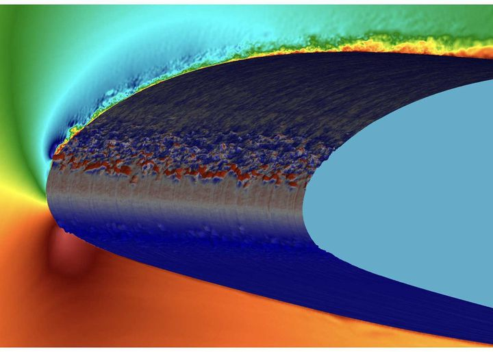


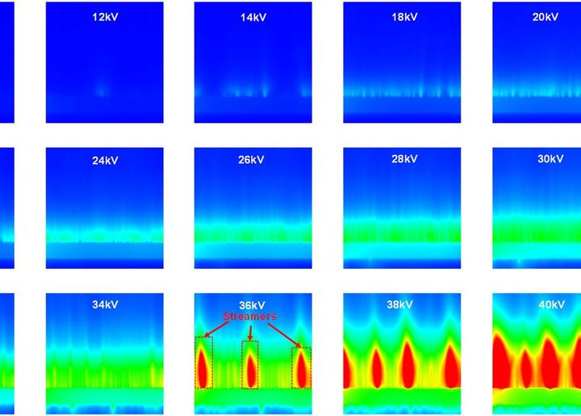


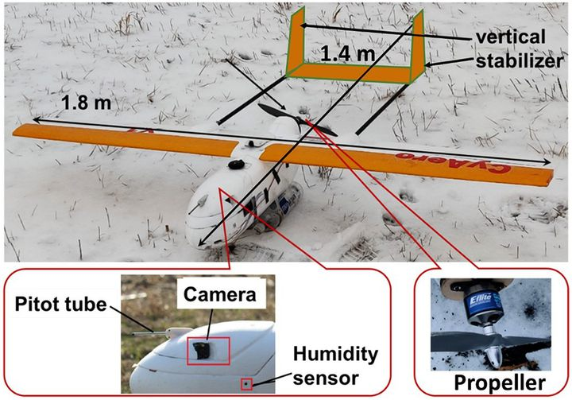

What's new
Recent results from the team that FROST is built on.
Agents inventory the archive
In a pilot curation pass, LLM agents read 68 open-access papers, four slide decks, and three internal reports and drafted records for more than 50 data products. A curator checked every value.
PhysMiner released
A multi-agent LLM framework for flow-physics analysis. On a periodic-hill benchmark it completed 5 of 5 end-to-end runs for US$3.89 each on average.
NASA IRT 401–405, no fitted coefficients
An agent-developed ice-accretion model reproduces the five NASA reference runs with 0.9–2.1 mm mean thickness error.
346 M unknowns on one GPU
High-order LES of the rime-iced S1223 resolves the region below the wing that PIV cannot see.
One archive, four layers
Measurements validate and harmonize simulations; simulations complete what experiments cannot see; both train generative models and agents, which answer questions no single campaign was designed to answer.
Legacy experiments
Objective 1 · Aims 1.1–1.2The only university-owned icing research tunnel in the U.S.; ~20 years, ~200 TB.
→ validate · harmonize
Validated simulation
Objective 1 · Aim 1.3Complete what experiments cannot measure, inside measurement uncertainty.
→ augment · complete

Generative AI + agents
Objective 2 · Aims 2.1–2.2Curate, simulate, analyze, and generate with a human signing off every release.
→ generate · discover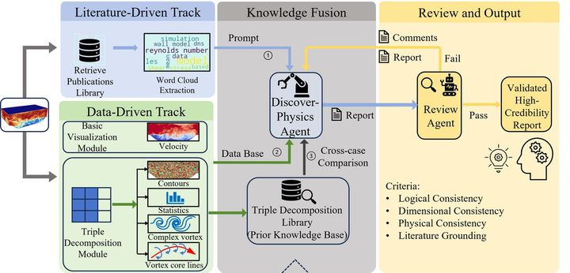
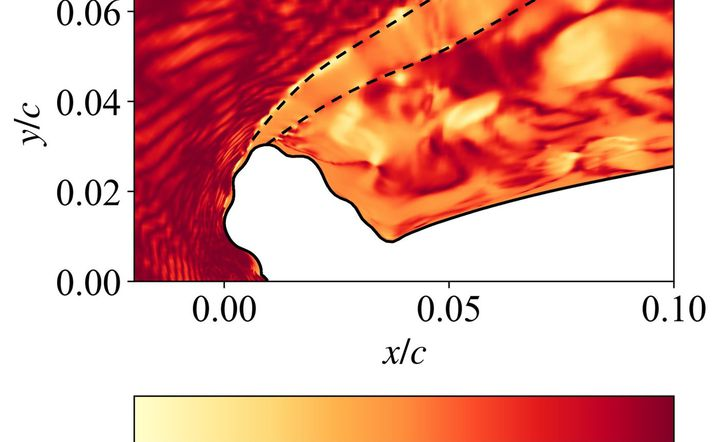
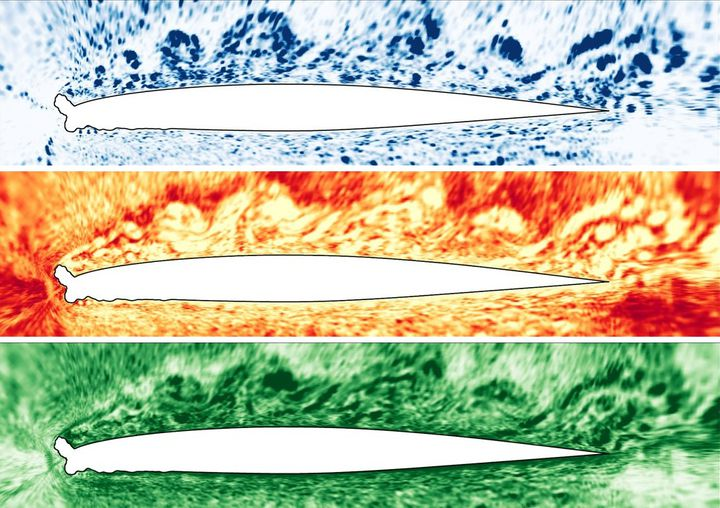
Discovery + impact
Objective 2 · Aim 2.3Ice-aware UAV planning, in-flight ice detection, and a first data-driven UAV icing envelope.
→ safer all-weather flight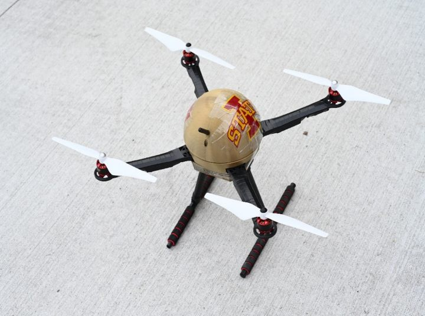
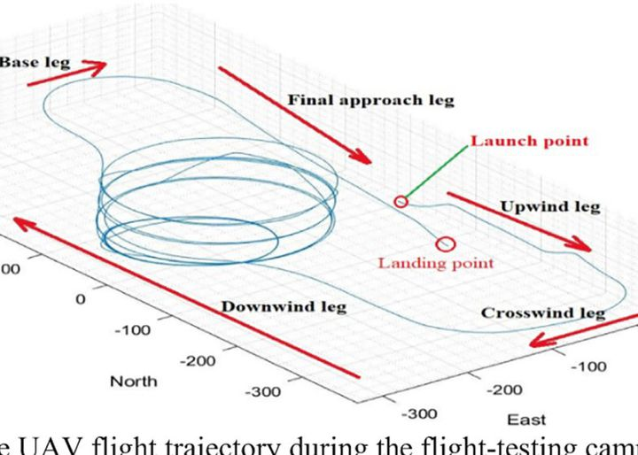
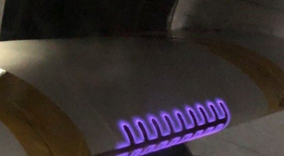
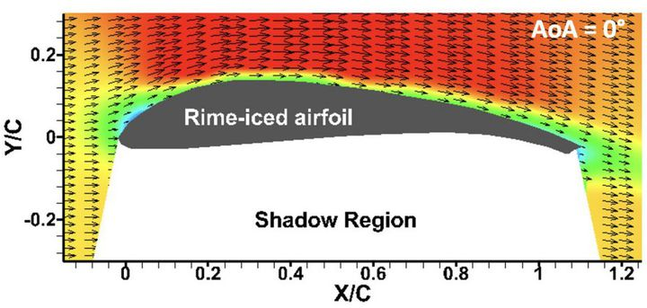
One test case, five data products, one record
Ice grown on an S1223 UAV wing was scanned, 3D-printed, and re-tested; two independent simulations used the same scan. FROST links them into one machine-readable, provenance-tracked record, and fills the region below the wing that PIV cannot see with validated simulation.
geometry S1223 UAV airfoil · c = 0.2 m · scan 150 µm icing 20 m/s · −15 °C · 0.5 g/m³ · 463 s · rime test Re 2.65e5 · AoA 0/5° · Tu 3% ← facility fields ice.stl ✓ loads ✓ Cp[42] ✓ PIV[500] ✓ completed lower-surface u, Cm ← validated LES provenance sha256 · W3C PROV · CC-BY-4.0 · DOI at release
The icing envelope, seen across geometries
Each mark is a tunnel campaign condition from the 37 aircraft- and UAV-icing papers inventoried in the pilot curation pass. ISU-IRT campaigns appear in 25 of them since 2016.
Gray dots mark where validated LES will augment the envelope around measured anchors (Aim 1.3), targeting at least four times more covered (T∞, LWC) cells per geometry family.
Archive coverage of the icing envelope
| Family | T∞ (°C) | LWC (g/m³) |
|---|---|---|
| Airfoils & wings | -8 | 1.1 |
| Airfoils & wings | -5 | 2.0 |
| Airfoils & wings | -15 | 1.0 |
| Airfoils & wings | -15 | 0.5 |
| Airfoils & wings | -8 | 2.5 |
| Airfoils & wings | -5 | 3.0 |
| Airfoils & wings | -5 | 4.0 |
| Airfoils & wings | -5 | 0.3 |
| Airfoils & wings | -5 | 1.5 |
| Rotating: propellers & engine fans · propeller | -5 | 0.5 |
| Rotating: propellers & engine fans · propeller | -5 | 1.0 |
| Rotating: propellers & engine fans · propeller | -5 | 2.0 |
| Rotating: propellers & engine fans · propeller | -15 | 0.5 |
| Rotating: propellers & engine fans · propeller | -15 | 1.0 |
| Rotating: propellers & engine fans · propeller | -15 | 2.0 |
| Rotating: propellers & engine fans · propeller | -10 | 1.0 |
| Rotating: propellers & engine fans · engine fan/spinner | -5 | 2.4 |
| Rotating: propellers & engine fans · engine fan/spinner | -10 | 1.1 |
| Rotating: propellers & engine fans · engine fan/spinner | -5 | 2.0 |
| Rotating: propellers & engine fans · engine fan/spinner | -15 | 0.5 |
| Rotating: propellers & engine fans · engine fan/spinner | -18 | 0.3 |
| Probes & cables · Pitot probe | -15 | 0.5 |
| Probes & cables · Pitot probe | -15 | 1.0 |
| Probes & cables · Pitot probe | -15 | 1.5 |
| Probes & cables · Pitot probe | -15 | 2.0 |
| Probes & cables · Pitot probe | -5 | 0.5 |
| Probes & cables · Pitot probe | -5 | 1.0 |
| Probes & cables · Pitot probe | -5 | 1.5 |
| Probes & cables · Pitot probe | -5 | 2.0 |
| Probes & cables · power/bridge cable | -15 | 1.0 |
| Probes & cables · power/bridge cable | -5 | 2.0 |
| Field flights · natural cloud | -1.6 | natural cloud |
| Field flights · natural cloud | -3.3 | natural cloud |
Every instrument, one physical description
The same icing physics measured by high-speed cameras, projected fringes, lasers, thermal cameras, holograms, load cells, and onboard sensors, harmonized into one similarity space.


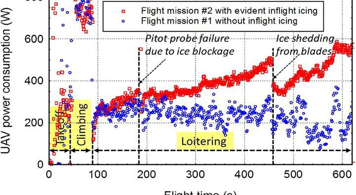
For people, ML users, and AI agents
Every record is served in open formats (HDF5/Zarr, STL/PLY, Parquet, MP4/TIFF) through a web portal, a Python API, and a Model Context Protocol server.
You are looking at the preview of the portal. Browse the catalog →
import frost ds = frost.load("ice-shape", version="1.0", cond=dict(LWC=(0.5, 2.0)), tags=["measured"]) loader = ds.to_torch(batch_size=32) # or ds.to_jax() bench = frost.bench("T2-piv-shadow") # held-out split
agent → frost.search("rime S1223 PIV") frost → records with DOI, origin tag, uncertainty, and PROV lineage agent → frost.get(id); frost.cite(id) agent → frost.simulate(id) # via DAFoam
From archive to community dataset
Each release is gated by integrity checks and curator sign-off, versioned, and preserved as a DOI snapshot. Months count from project start.
Preview
Archive inventoried by agents; pilot records drafted and curator-checked; this preview portal.
FROST v0.5
The 25 pilot ISU-IRT campaigns and the S1223 and NASA IRT 401–405 benchmarks.
FROST v1.0
All ISU-IRT, rotor, and UAV flight campaigns since 2016, with validated simulation completions.
FROST v2.0
The full archive and the FROST-Gen generative benchmarks.
Six communities with a documented need
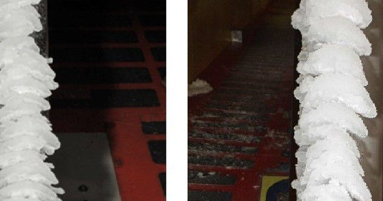
Aircraft icing & certification
583 U.S. icing accidents and 819 deaths, 1982–2000; certification envelopes of 14 CFR Part 25 Appendices C and O.
Uncrewed & advanced air mobility
837,513 FAA-registered drones, yet no UAV icing envelope exists.
Aero-engines & rotorcraft
Fan, spinner, and ice-crystal icing that drive engine certification testing.

Power & transport infrastructure
Transmission conductors and bridge stay cables.
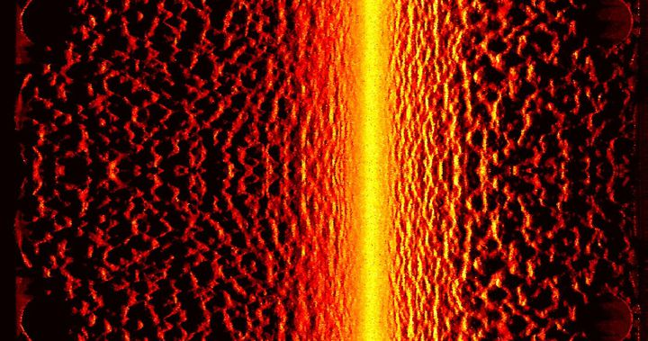
CFD & multiphase modeling
Validation data for accretion, runback, droplet impact, and rough-wall turbulence.
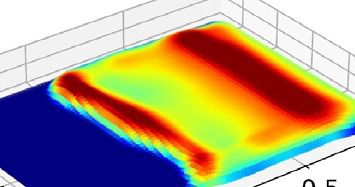
AI for science
A rare experiment-anchored multiphase benchmark with partial observations.
Four PIs, one record at a time
Experiments, high-fidelity simulation, AI agents, and generative AI, with overlapping expertise that ties the layers together.
Use FROST, or add to it
Request early access to a collection, or bring your own icing data through the reviewed contribution path and earn a contributor DOI.